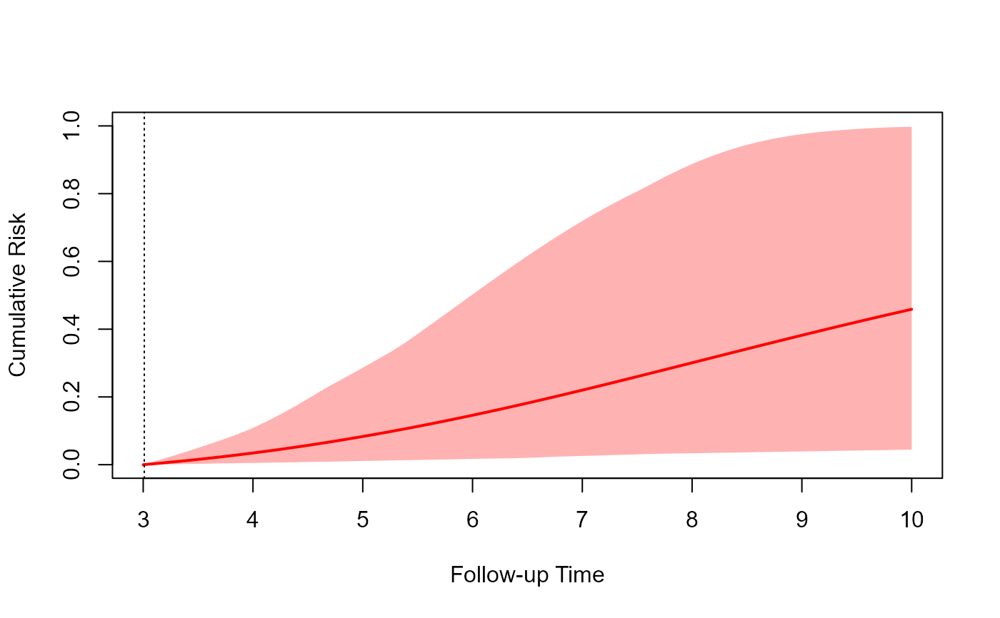
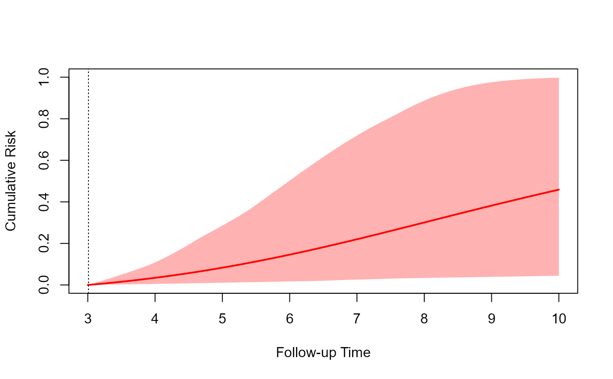

Predictions from Joint Models
predict.RdPredict method for object of class "jm".
# S3 method for jm
predict(object,
newdata = NULL, newdata2 = NULL, times = NULL,
process = c("longitudinal", "event"),
type_pred = c("response", "link"),
type = c("subject_specific", "mean_subject"),
control = NULL, ...)
# S3 method for predict_jm
plot(x, x2 = NULL, subject = 1, outcomes = 1,
fun_long = NULL, fun_event = NULL, CI_long = TRUE, CI_event = TRUE,
xlab = "Follow-up Time", ylab_long = NULL, ylab_event = "Cumulative Risk",
main = "", lwd_long = 2, lwd_event = 2, ylim_long_outcome_range = TRUE,
col_line_long = "#0000FF",
col_line_event = c("#FF0000", "#03BF3D", "#8000FF"), pch_points = 16,
col_points = "blue", cex_points = 1, fill_CI_long = "#0000FF4D",
fill_CI_event = c("#FF00004D", "#03BF3D4D", "#8000FF4D"), cex_xlab = 1,
cex_ylab_long = 1, cex_ylab_event = 1, cex_main = 1, cex_axis = 1,
col_axis = "black", pos_ylab_long = c(0.1, 2, 0.08), bg = "white",
...)
# S3 method for jmList
predict(object,
weights, newdata = NULL, newdata2 = NULL,
times = NULL, process = c("longitudinal", "event"),
type_pred = c("response", "link"),
type = c("subject_specific", "mean_subject"),
control = NULL, ...)Arguments
- object
an object inheriting from class
"jm"or a list of"jm"objects.- weights
a numeric vector of model weights.
- newdata, newdata2
data.frames.
- times
a numeric vector of future times to calculate predictions.
- process
for which process to calculation predictions, for the longitudinal outcomes or the event times.
- type
level of predictions; only relevant when
type_pred = "longitudinal". Optiontype = "subject_specific"combines the fixed- and random-effects parts, whereastype = "mean_subject"uses only the fixed effects.- type_pred
type of predictions; options are
"response"using the inverse link function in GLMMs, and"link"that correspond to the linear predictor.- control
a named
listof control parameters:- all_times
logical; if
TRUEpredictions for the longitudinal outcomes are calculated for all the times given in thetimesargumet, not only the ones after the last longitudinal measurement.
.
- times_per_id
logical; if
TRUEthetimesargument is a vector of times equal to the number of subjects innewdata.- level
the level of the credible interval.
- return_newdata
logical; should
predict()return the predictions as extra columns innewdataandnewdata2.- use_Y
logical; should the longitudinal measurements be used in the posterior of the random effects.
- return_mcmc
logical; if
TRUEthe mcmc sample for the predictions is returned. It can beTRUEonly in conjuction withreturn_newdatabeingFALSE.- n_samples
the number of samples to use from the original MCMC sample of
object.- n_mcmc
the number of Metropolis-Hastings iterations for sampling the random effects per iteration of
n_samples; only the last iteration is retained.- parallel
character string; what type of parallel computing to use. Options are
"snow"(default) and"multicore".- cores
how many number of cores to use. If there more than 20 subjects in
newdata, parallel computing is invoked with four cores by default. Ifcores = 1, no parallel computing is used.- seed
an integer denoting the seed.
- x, x2
objects returned by
predict.jm()with argumentreturn_dataset toTRUE.- subject
when multiple subjects are included in the data.frames
xandx2, it selects which one to plot. Only a single subject can be plotted each time.- outcomes
when multiple longitudinal outcomes are included in the data.frames
xandx2, it selects which ones to plot. A maximum of three outcomes can be plotted each time.- fun_long, fun_event
function to apply to the predictions for the longitudinal and event outcomes, respectively. When multiple longitudinal outcomes are plotted,
fun_longcan be a list of functions; see examples below.- CI_long, CI_event
logical; should credible interval areas be plotted.
- xlab, ylab_long, ylab_event
characture strings or a chracter vector for
ylab_longwhen multiple longitudinal outcomes are considered with the labels for the horizontal axis, and the two vertical axes.- lwd_long, lwd_event, col_line_long, col_line_event, main, fill_CI_long, fill_CI_event, cex_xlab, cex_ylab_long, cex_ylab_event, cex_main, cex_axis, pch_points, col_points, cex_points, col_axis, bg
graphical parameters; see
par.- pos_ylab_long
controls the position of the y-axis labels when multiple longitudinal outcomes are plotted.
- ylim_long_outcome_range
logical; if
TRUE, the range of the y-axis spans across the range of the outcome in the data used to fit the model; not only the range of values of the specific subject being plotted.- ...
aguments passed to control.
Details
A detailed description of the methodology behind these predictions is given here: https://drizopoulos.github.io/JMbayes2/articles/Dynamic_Predictions.html.
Value
Method predict() returns a list or a data.frame (if return_newdata was set to TRUE) with the predictions.
Method plot() produces figures of the predictions from a single subject.
See also
Examples
# \donttest{
# We fit a multivariate joint model
pbc2.id$status2 <- as.numeric(pbc2.id$status != 'alive')
CoxFit <- coxph(Surv(years, status2) ~ sex, data = pbc2.id)
fm1 <- lme(log(serBilir) ~ ns(year, 3) * sex, data = pbc2,
random = ~ ns(year, 3) | id, control = lmeControl(opt = 'optim'))
fm2 <- lme(prothrombin ~ ns(year, 2) * sex, data = pbc2,
random = ~ ns(year, 2) | id, control = lmeControl(opt = 'optim'))
fm3 <- mixed_model(ascites ~ year * sex, data = pbc2,
random = ~ year | id, family = binomial())
jointFit <- jm(CoxFit, list(fm1, fm2, fm3), time_var = "year", n_chains = 1L)
# we select the subject for whom we want to calculate predictions
# we use measurements up to follow-up year 3; we also set that the patients
# were alive up to this time point
t0 <- 3
ND <- pbc2[pbc2$id %in% c(2, 25), ]
ND <- ND[ND$year < t0, ]
ND$status2 <- 0
ND$years <- t0
# predictions for the longitudinal outcomes using newdata
predLong1 <- predict(jointFit, newdata = ND, return_newdata = TRUE)
# predictions for the longitudinal outcomes at future time points
# from year 3 to 10
predLong2 <- predict(jointFit, newdata = ND,
times = seq(t0, 10, length.out = 51),
return_newdata = TRUE)
# predictions for the event outcome at future time points
# from year 3 to 10
predSurv <- predict(jointFit, newdata = ND, process = "event",
times = seq(t0, 10, length.out = 51),
return_newdata = TRUE)
plot(predLong1)
 # for subject 25, outcomes in reverse order
plot(predLong2, outcomes = 3:1, subject = 25)
# for subject 25, outcomes in reverse order
plot(predLong2, outcomes = 3:1, subject = 25)


 # prediction for the event outcome
plot(predSurv)

# combined into one plot, the first longitudinal outcome and cumulative risk
plot(predLong2, predSurv, outcomes = 1)
# prediction for the event outcome
plot(predSurv)

# combined into one plot, the first longitudinal outcome and cumulative risk
plot(predLong2, predSurv, outcomes = 1)
 # the first two longitudinal outcomes
plot(predLong1, predSurv, outcomes = 1:2)
# the first two longitudinal outcomes
plot(predLong1, predSurv, outcomes = 1:2)
 # all three longitudinal outcomes, we display survival probabilities instead
# of cumulative risk, and we transform serum bilirubin to the original scale
plot(predLong2, predSurv, outcomes = 1:3, fun_event = function (x) 1 - x,
fun_long = list(exp, identity, identity),
ylab_event = "Survival Probabilities",
ylab_long = c("Serum Bilirubin", "Prothrombin", "Ascites"),
pos_ylab_long = c(1.9, 1.9, 0.08))
# all three longitudinal outcomes, we display survival probabilities instead
# of cumulative risk, and we transform serum bilirubin to the original scale
plot(predLong2, predSurv, outcomes = 1:3, fun_event = function (x) 1 - x,
fun_long = list(exp, identity, identity),
ylab_event = "Survival Probabilities",
ylab_long = c("Serum Bilirubin", "Prothrombin", "Ascites"),
pos_ylab_long = c(1.9, 1.9, 0.08))
 # }
# }